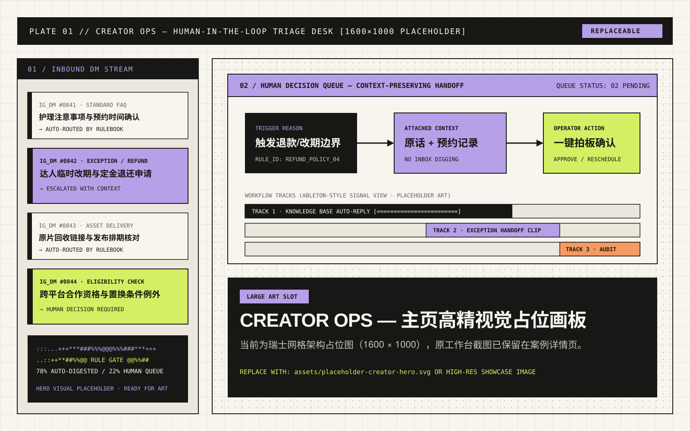

01 // CREATOR OPS · 工作台原型
LARGE VISUAL PLACEHOLDER [1600×1000]

常规咨询走规则，退款与改期带上下文转人工。
↗
RULE GATE // 规则消化
标准咨询与预约自动应答
护理问答、到店核对与原片回收走知识库，免去重复私信。
HUMAN QUEUE // 人工拍板
退款 · 改期 · 资格例外
附带转交原因与原对话记录直达待办，不翻收件箱。
达人合作 / 人机分工
Creator OPS
达人合作管理工作台
脱胎于一线达人合作交付的真实痛点。针对沟通散在私信与表格、运营反复回复同类问题的情况，设计人机分工工作台：标准咨询按规则消化，退款、改期等例外事项自动汇总前序对话生成待办，让人只处理需要拍板的环节。